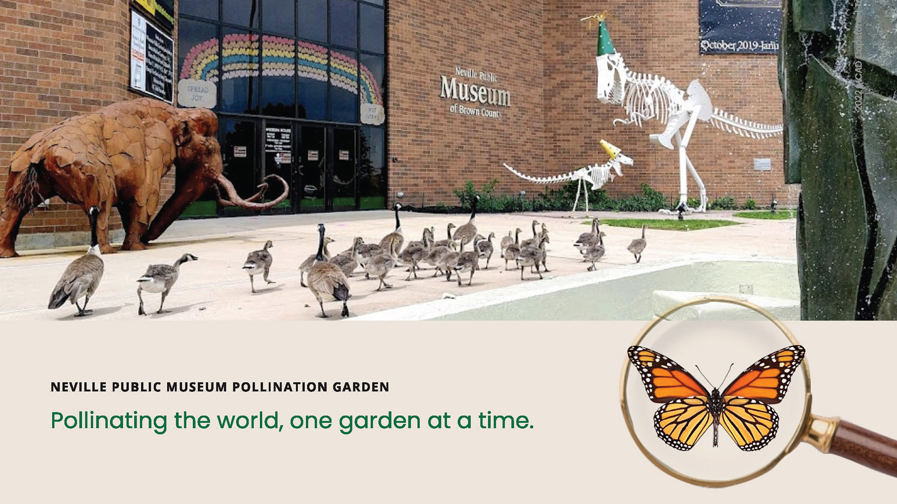
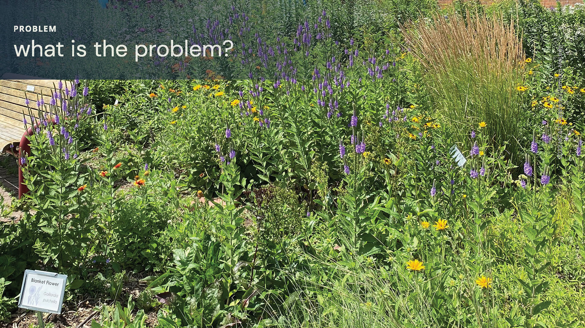
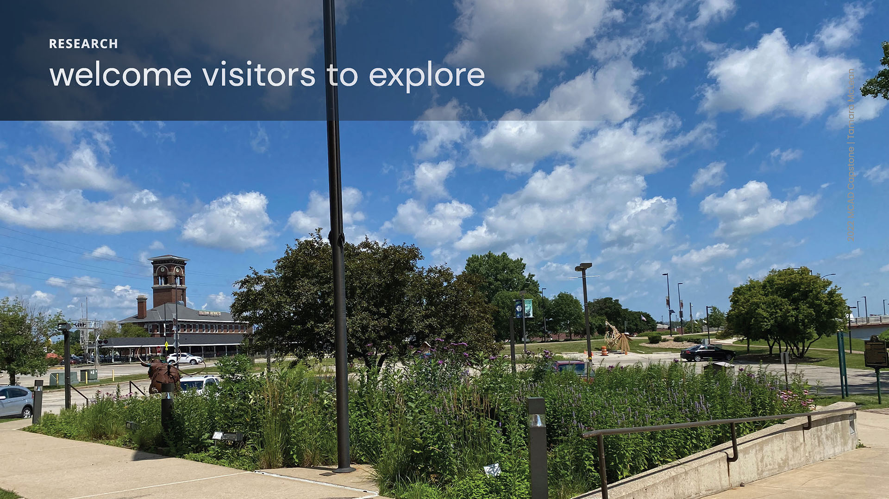
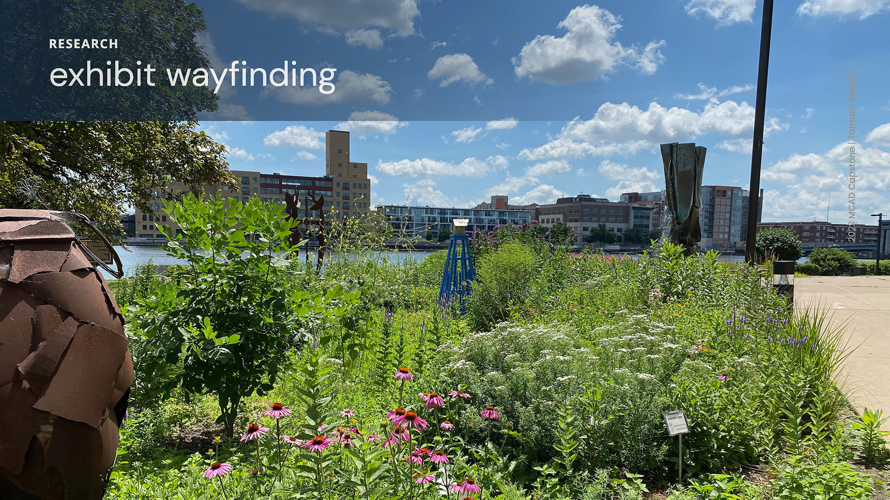

NPM Pollination Garden





The current lack of information results in ambivalence toward the pollination garden.
By welcoming visitors, there is an opportunity to provide information and entertainment while visitors wait for the museum to open or rest from a walk on the adjacent trail.
The garden lacks a welcoming point of interaction. There currently is no exhibit way-finding Language options and accessibility could be improved Identification of plants is currently close to the ground and not in one central location
Grandparents, grandchildren, and everyone in between visit the Brown County Neville Public Museum. The museum makes every effort to offer inclusive experiences to all who engage with the exhibits, regardless of abilities or technology access. A wide age and ability range is one challenge.
Visitors speaking various languages and guests with accessibility needs are common at the museum. It is essential to the staff and the foundation board that visitors enjoy exhibits in many ways. When we design for accessibility, we enhance the experience for all.
The predicted outcome we are designing for — engagement and conversation both in the garden and inside the museum.
An interactive app designed to entertain and educate visitors of all ages, and a plant and pollinator information kiosk at the garden's edge. These tools will be used to increase engagement in the following ways:
Providing opportunities for conversation both at the museum and throughout the community.